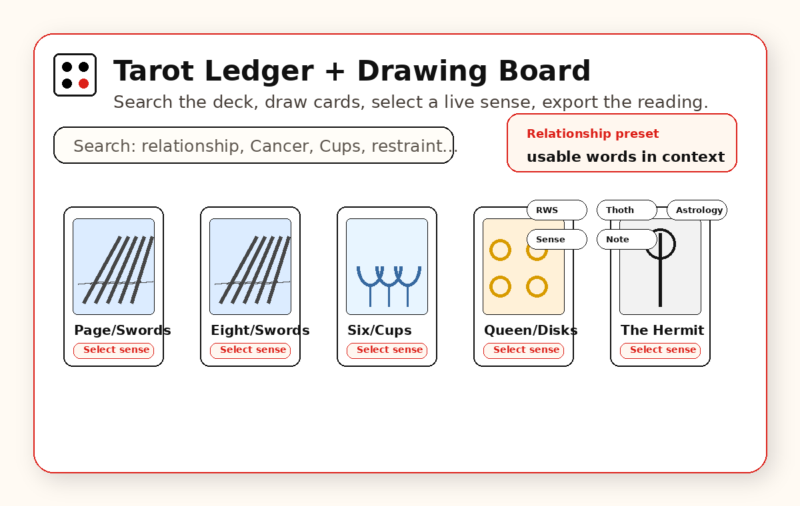
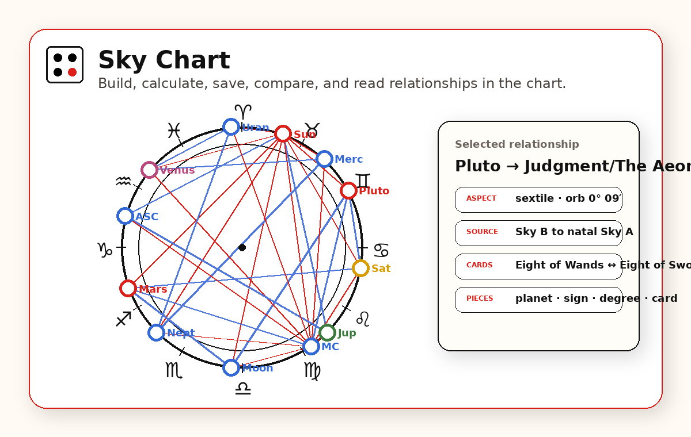
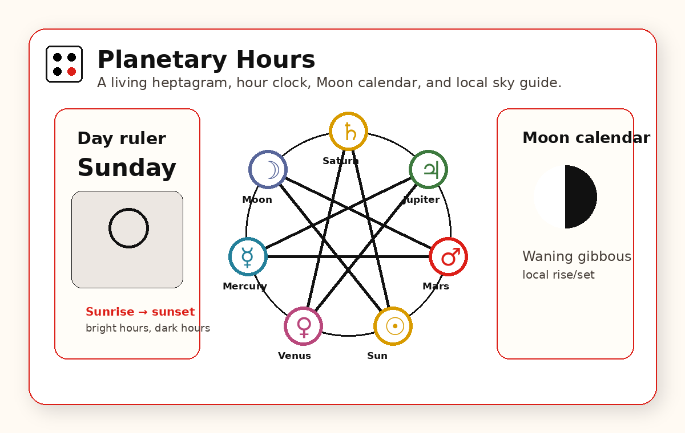
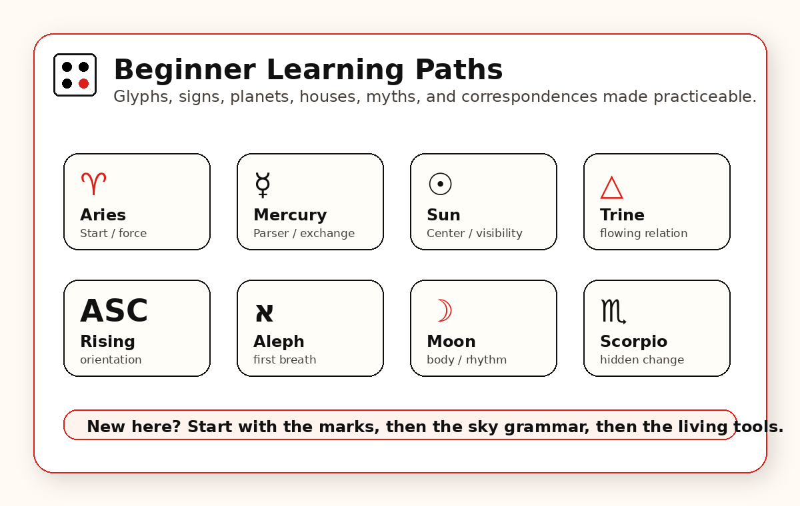

Flagship instrument
Tarot Ledger
Search the symbolic deck, inspect complete card entries and correspondences, draw cards and spreads, and use the Ledger as a focused tarot reference.
Open Tarot LedgerInstrument Index
The Anniversary Edition is a living architecture: tarot, astrology, timing, glyph practice, mythic comparison, and beginner learning paths in one symbolic workspace.

Flagship instrument
Search the symbolic deck, inspect complete card entries and correspondences, draw cards and spreads, and use the Ledger as a focused tarot reference.
Open Tarot LedgerArrange tarot cards spatially, draw or search directly into positions, preserve reversals and reading structure, then select any board card to read its complete Tarot Ledger entry below the board.
Open Drawing Board
Build, paste, calculate, save, and compare sky placements. Read aspect relationships and chart-card results.
Open Sky Chart
A sunrise-to-sunrise planetary hours ticker, table, living heptagram, Moon calendar, and local sky-timing tool.
Open Planetary Hours
Learn glyphs, aspects, orbs, house systems, planet orders, Greek and Roman gods, Hebrew letters, and Greek letters.
Start with Glyph TrainerReference rooms
Flippable icon tiles for house, sign, and planet characteristics.
Open Astrology FoundationsGreek and Roman gods compared by realm, planet, tarot bridge, and symbolic difference.
Open Mythic AtlasCompare zodiac sign literacy with constellation stick-figure sky patterns and sign-versus-constellation context.
Open Constellation TrainerLearn coherence through body, horizon, shadow, sky, direction, rope, compass, time, and navigation.
Open Ancient MeasuresRotate regular polygons through the circle of fifths and hear each vertex-note crossing become a scale, chord, or ordered harmonic pattern.
Open Polygon HarmonicsPrang the continuum into a branded rainbow spectrum and discretize it into usable frequency bands.
Open Rainbow BrandA landing path for visitors who need a human-readable orientation before choosing a tool.
Read the Guide